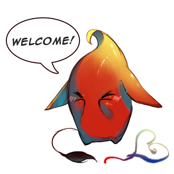

- Come and visit Inkjinks at the Otaku Jutsu no Daigaku on April 27, Saturday at the Bulacan State University Malolos Activity Center and get our latest releases as well drawing commissions from our artist Earl Jan!
- International orders for Alphario Vol. 1 are now open. Grab your copy for only $8! Message us now in deviantART or Facebook!
- Thank you for supporting Inkjinks at the Otaku Expo 2013 and Summer Komikon 2013! Meeting everyone was a blast! Don't forget to like our Facebook fanpage and see you at the next events!
- Get this season's hottest titles at the Otaku Expo 2013 and Summer Komikon 2013 - After School Lesson: First Semester by kirej7, Alphario Vol. 1 by splgum, Femme Aesthetica by kkun88, Rizaleot by enghel, Tonio T. by TyrfryT, and X-axis Magazine: The Philippines' first fully colored collaborative pin-up girls art magazine!
